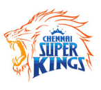
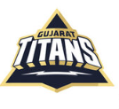
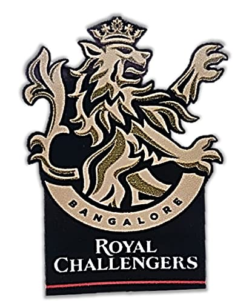
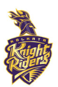
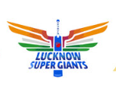
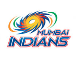
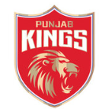
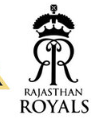

iamhardik()
Hobbies
Let's Enter into Cricket World.
Cricket is a bat-and-ball game played between two teams of eleven players on a field at the centre of which is a 22-yard (20-metre) pitch with a wicket at each end, each comprising two bails balanced on three stumps. Two players from the batting team (the striker and nonstriker) stand in front of either wicket, with one player from the fielding team (the bowler) bowling the ball towards the striker's wicket from the opposite end of the pitch. The striker's goal is to hit the bowled ball and then switch places with the nonstriker, with the batting team scoring one run for each exchange. Runs are also scored when the ball reaches or crosses the boundary of the field or when the ball is bowled illegally.
The earliest known definite reference to cricket is to it being played in South East England in the mid-16th century. It spread globally with the expansion of the British Empire, with the first international matches in the second half of the 19th century. The game's governing body is the International Cricket Council (ICC), which has over 100 members, twelve of which are full members who play Test matches. The game's rules, the Laws of Cricket, are maintained by Marylebone Cricket Club (MCC) in London. The sport is followed primarily in South Asia, Australia, New Zealand, the United Kingdom, Southern Africa and the West Indies.[1]

The Indian Premier League (IPL) (also known as the TATA IPL for sponsorship reasons) is a men's Twenty20 (T20) cricket league that is annually held in India. The league is contested by ten city-based franchise teams.[3][4] The BCCI founded the league in 2007. The competition is usually held in summer between March and May every year. It has an exclusive window in the ICC Future Tours Programme due to fewer international cricket tours happening during IPL seasons worldwide.
On 13 September 2007,[25] following India's victory at the 2007 T20 World Cup,[26] the BCCI announced a franchise-based Twenty20 cricket (T20) competition called the Indian Premier League. The first season was scheduled to start in April 2008 in a "high-profile ceremony" at New Delhi. BCCI vice-president Lalit Modi, who led the IPL effort, provided details of the tournament, including its format, prize money, franchise revenue system, and squad composition rules. The new league, which would be run by a seven-man governing council, would also be the qualifying mechanism for that year's Champions League Twenty20.
The Indian Premier League (IPL) (also known as the TATA IPL for sponsorship reasons) is a men's Twenty20 (T20) cricket league that is annually held in India. The league is contested by ten city-based franchise teams.[3][4] The BCCI founded the league in 2007. The competition is usually held in summer between March and May every year. It has an exclusive window in the ICC Future Tours Programme due to fewer international cricket tours happening during IPL seasons worldwide.
On 13 September 2007,[25] following India's victory at the 2007 T20 World Cup,[26] the BCCI announced a franchise-based Twenty20 cricket (T20) competition called the Indian Premier League. The first season was scheduled to start in April 2008 in a "high-profile ceremony" at New Delhi. BCCI vice-president Lalit Modi, who led the IPL effort, provided details of the tournament, including its format, prize money, franchise revenue system, and squad composition rules. The new league, which would be run by a seven-man governing council, would also be the qualifying mechanism for that year's Champions League Twenty20.
Teams
| Team name | Symbol |
|---|---|
| Chennai super kings |  |
| Gujarat titans |  |
| Royal changer banglore |  |
| Kolkata night riders |  |
| Sunrisers hyderabad | |
| luchknow super giants |  |
| Delhi capitals | |
| Mumbai indians |  |
| Punjab kings |  |
| Rajasthan royals |  |
Video
Audio